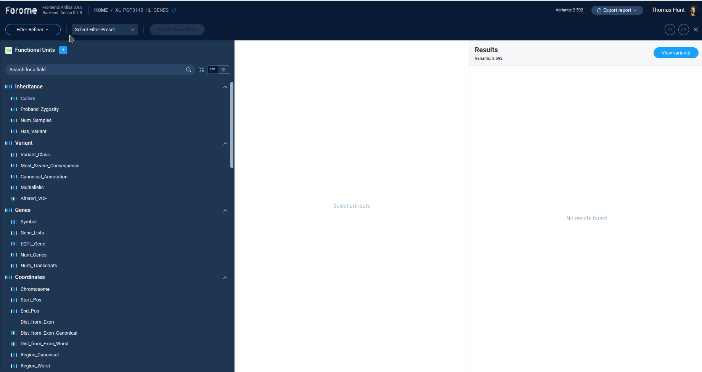
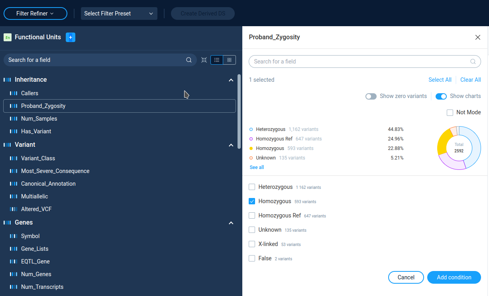
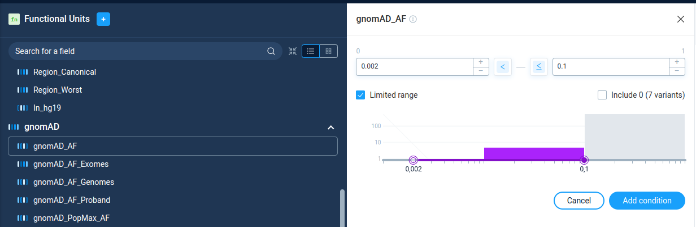
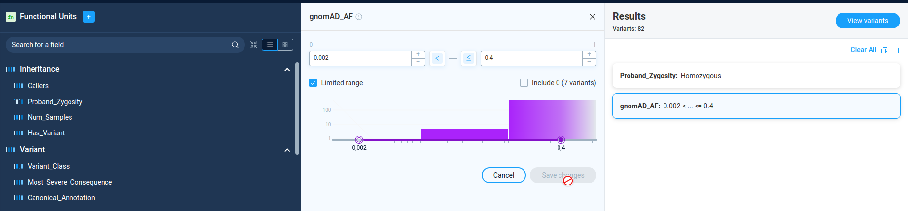
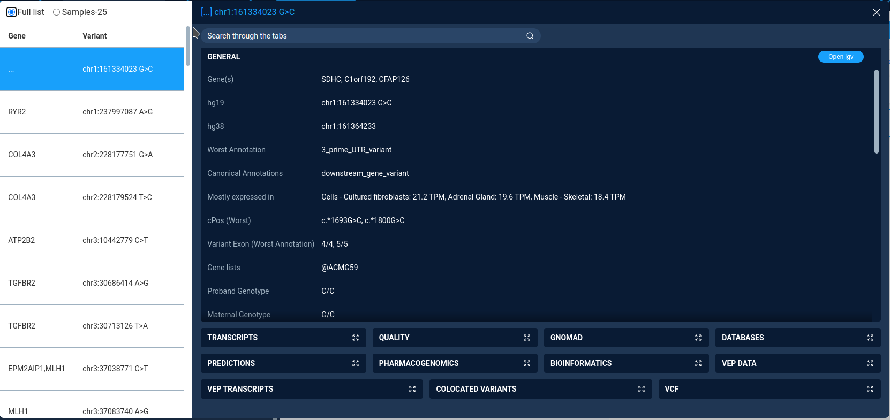
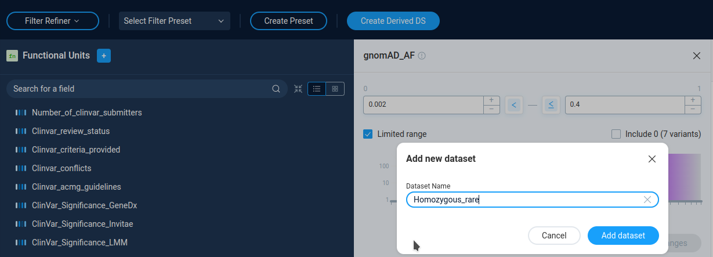

Filter refiner¶
To start variations filtering by Filter refiner user should select Whole genome/exome and then Explore data or build new filter option. After this, the filter refiner window opens.
{kind=link}
Main Filter refiner window¶
The caption of the Filter Refiner window contains the set of controls. The left one displays the work mode: Filter Refiner. Next to it user can select and create filter presets. Finally, user can create a derived dataset for filtered ones.
Filters¶
Below the caption string there is a list of available filters.
The Anfisa provides for the user the large set of available filters for almost all variation properties in initial VCF file. By clicking on the each filter user can see the filter settings and details.
All list of available filters with descriptions are available on the separate page (not ready now, to be added in future).
By operation mode all filters can be divided into two groups:
Categorical
Numeric
Categorical filters¶
Categorical data entries are presented by list of filtering categories. On the filter details page AnFiSA shows histogram or pie chart of categories distribution. User can select/deselect categories from the list.
{kind=link}
Only variants from selected categories will go to subsequent analysis. The Not Mode inverts the variations selection.
Numeric filters¶
The numeric filters allows user to filter variations by the value of some numerical parameter. On the filter details page AnFiSA shows histogram of value distribution. The distribution histogram is displayed in linear or logarithmic scale. The display mode is pre-configured for filter and can’t be changed by user.
{kind=link}
User can select value range to pass visually on the histogram or by typing the numeric values, or by clicking on the histogram. The buttons “<” and “<=” next to data entry edits controls incluson/exclusion of the border values.
The checkbox “Limited range” next to range selection forces user to choose parameter boundaries only inside the real parameter range for current data set. This option is select by default. For individual dataset analysis there is no sense in unchecking this option. However, for building preset to process different data sets, user can unselect this checkbox and have more flexibility in region selection.
Each numeric filter passes variations with the parameter value inside the specified range. In Filter Refiner mode there is no way to select variations outside the selected range. To do this, one can use Decision tree.
Filter chain creation¶
After setting filtering options for the filter user applies it by pressing the Add condition button on th filter details page. After pressing this button, new filter will be added to the list of filters on the right panel Results.
User can continue filtering process by adding new filters to the list. Anfisa allows to apply to a dataset combinations of filters, and each additional filter operates on the result output of the previous filtering. The consequent application of different filters results only in conjunctions of the conditions.
On the Results panel user can see all active filters, view and change filter settings. After filter settings change user need to press Save changes button to apply it. User can continue refinement process and add new filter to narrow the variations set.
Also AnFiSA displays the number of variants passing filter chain next to the panel caption: “Variants: 837”
{kind=link}
User can delete an active filter by selecting pit and pressing the “Garbage bin” icon on the right of the Results panel. Or user can delete al filters by pressing the Clear All button.
Filtering chain functioning notes¶
Each new filter is applied to the already filtered variations set. Therefore adding each new filter will lead to narrowing of the variation set. To achieve more flexible filtering one should use Decision tree capability.
All charts in the filter details panel also displays the statistics for variations filed by previous filters, no for original variations set.
All “regular” filters available in the filter refinement page are commutative: they can be applied in any order and will produce the same result. This is the requirement of all OLAP data analysis platforms. Support of non-commutative operations is much more complicated and described in the separate section “Notes on Zygosity”
Presets¶
User can save a created set of filters by pressing the Create preset button. User should provide the preset name and optionally assign a solution pack – the group of presets. To load a preset, user just needs to select a preset in a combo-box on the Filter Refiner caption.
Viewing and saving filtration result¶
At the each step of data processing user can view the filtering results by pressing the View variants button next to Results panel caption. AnFiSA displays the variations table in a new modal window. The button is active only if there are not more than 10000 variations in results.
The variation view window is in fact a limited version of the variation view table, available for secondary datasets. It is designed to be lightweight and fast, therefore it has only a limited set of functions.
{kind=link}
The left part of the window contains table with all variations and genes, affected by the variation.
The combobox on top of the variations table defines the variations view mode:
Samples-25 - display 25 randomly selected variations. Selected by default
Full list - display all variations. Available only is filtered set contains less than 300 variations.
The right part of the window displays the detailed data for selected variations. The variation properties are grouped by type in the collapsed boxes. User can expand any box by clicking on it.
Creating a derived data set¶
User can save the resulting set of the variations as a derived dataset by pressing the Create Derived DS button and providing dataset name. The derived datasets are described in the corresponding section of the manual.
{kind=link}
After creating a derived dataset user can open derived dataset, or continue refining data.